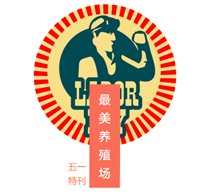
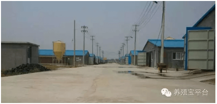
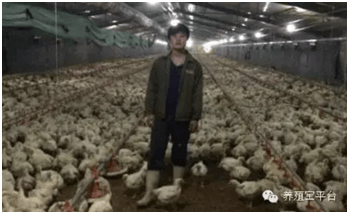
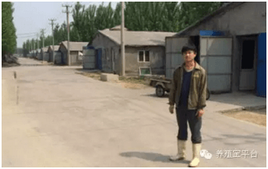
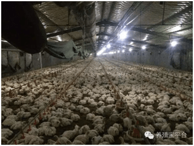
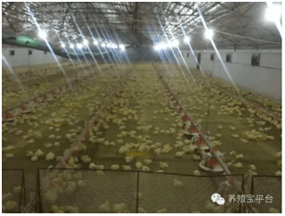
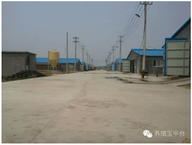
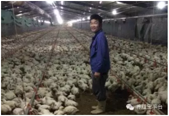
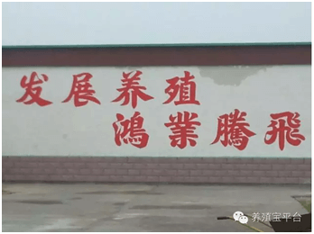

中国最美养殖场【五一特刊】
养殖宝发起的“寻找中国最美养殖场”活动第二期现已开启。
伴随着盛夏的袭来，养殖宝活动进入第二期。养殖宝本着与畜牧人同行，与时代同步的观念，紧切与互联网结合，利用互联网信息的发展让行业内各种资源紧密的联系在一起，迎来了共同追逐畜牧人梦想的机遇。相信每一站都会给我们留下感动与思索。
2016年5月1日，这次我们将走进华东地区的最北端省份——山东，来一探究竟。
山东亚太中慧集团邹平孙镇时家养殖场成为我们本次“寻找中国最美养殖场”活动的第二站。
地处齐鲁大地，山东亚太中慧集团邹平孙镇时家养殖场的每个工作细节散发着本地人的应有的豪爽和实在。
场长罗丛鹏介绍，身为90后的帅气小伙，经过4年内自己的点滴努力，逐渐了解养殖设备，并学习熟练对鸡舍环境的把握和调控，通过先进设备灵活的运用，与现场鸡舍的认真观察，本着认真责任的态度，一步一步脚踏实地，才把养殖场发展成今天。
养殖场现在的规模庞大，共有10栋鸡舍，养殖量约为18~19万只，08年建厂，今年的经济效益已经提升至平均每只利润2元左右。
而从属于亚太中慧更是为养殖场增加了渠道，从而能进一步扩大规模并且保证质量。养殖场依托亚太中慧，在养殖过程中，严格按照国际规范的卫生标准生产，强化生物安全，加强防疫，杜绝疫病发生，并按照出口企业的控残标准统一用药，实现标准化养殖。同时，全程使用微生态和酶制剂，从根本上解决了疫病防制和药物残留控制问题，保证了肉鸡生产的健康、安全。而且企业化、规模化养殖是中国未来养殖的发展趋势，养殖场正是反映了“要跟随时代的发展，跟随未来养殖的发展”的先锋。
而谈及养殖效益的关键点，罗场长真诚的说道：饲养的管理，疾病的诊断、防疫、流程等都是养殖的重中之重，每一个环节都需要花费很多的心血。
而面对今天互联网行业的兴起，罗场长也有自己独到的见解，很有远见的提出养殖业也会和互联网相关联，而通过朋友的介绍接触到养殖宝更是一份幸运，养殖宝可以直接将线下养殖与互联网关联起来，通过养殖宝，他学到了很多有用的知识，获取了不同的见解，认识了众多的同行和专家，更加深入了解了疾病诊断、免疫用药和饲养管理等各个方面。
经过罗场长介绍他致富的秘诀其实在于：与畜牧养殖业同呼吸、共命运的奋斗史，靠智慧与残酷无情的市场行情进行百折不挠的努力！
他用自己的诚信、共赢、开创经营理念，创造良好的企业环境，以全新的管理模式，完善的技术，周到的服务，卓越的品质为生存根本，服务于养殖业，为消费者带来安全的食品。